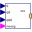

AxisControlBusData bus for one robot axis |
|
Information
This information is part of the Modelica Standard Library maintained by the Modelica Association.
Signal bus that is used to communicate all signals for one axis. This is an expandable connector which has a "default" set of signals. Note, the input/output causalities of the signals are determined from the connections to this bus.
Used in Components (4)
|  |
Modelica.Mechanics.MultiBody.Examples.Systems.RobotR3.Utilities Map path planning to one axis control bus |
|
Modelica.Mechanics.MultiBody.Examples.Systems.RobotR3.Utilities Motor model including current controller of r3 motors |
|
|
Modelica.Mechanics.MultiBody.Examples.Systems.RobotR3.Utilities P-PI cascade controller for one axis |
|
|
Modelica.Mechanics.MultiBody.Examples.Systems.RobotR3.Utilities Axis model of the r3 joints 4,5,6 |